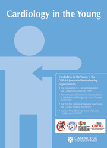
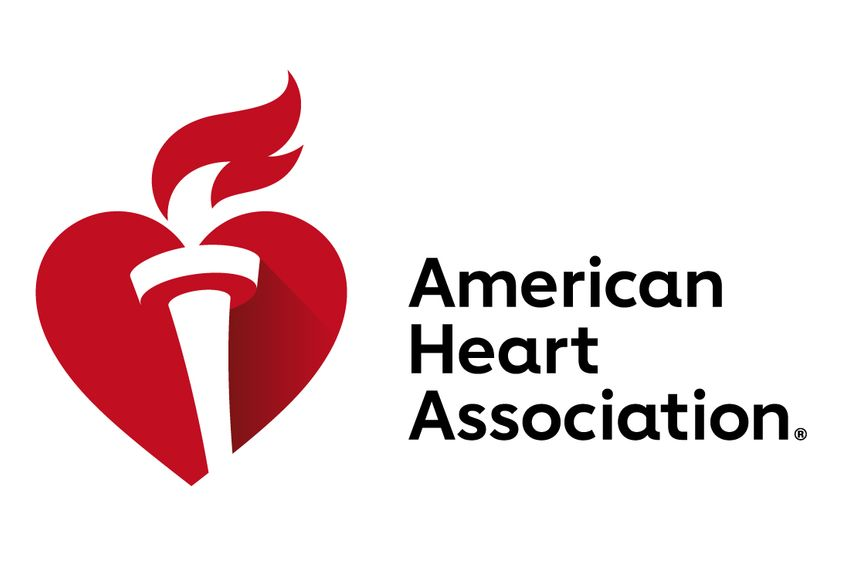

Survival after paediatric in-hospital cardiac arrest is worse on nights and weekends without demonstration of disparity in cardiopulmonary resuscitation quality. It is unknown whether these findings differ in children with CHD. This study aimed to determine whether cardiopulmonary resuscitation quality might explain the hypothesised worse outcomes of children with CHD during nights and weekends.
Real-world data on outcomes after stem cell transplant are aggregated in the international CIBMTR registry. The process of determining engraftment, a key outcome after transplant, is manual, tedious, error-prone. In this talk, we present an application we built and deployed at our center that virtually eliminated errors in engraftment dates reported to the CIBMTR.
Recurrent in-hospital cardiac arrest (IHCA) is associated with morbidity and mortality in adults. We aimed to describe the risk factors and outcomes for paediatric recurrent IHCA.
To determine the impact of high-frequency CPR training on performance during simulated and real pediatric CPR events in a pediatric emergency department (ED).

Amplitude spectral area (AMSA) predicts termination of fibrillation (TOF) with return of spontaneous circulation (ROSC) and survival in adults but has not been studied in pediatric cardiac arrest. We characterized AMSA during pediatric cardiac arrest from a Pediatric Resuscitation Quality Collaborative and hypothesized that AMSA would be associated with TOF and ROSC.
To evaluate pediatric cardiopulmonary resuscitation (CPR) quality during intra-hospital transport to facilitate extracorporeal membrane oxygenation (ECMO)-CPR (ECPR). We compared chest compression (CC) rate, depth, and fraction (CCF) between the pre-transport and intra-transport periods.
Survival after in-hospital cardiac arrest (IHCA) has been reported to be worse for arrests at night or during weekends.This study aimed to determine whether measured cardiopulmonary resuscitation (CPR) quality metrics might explain this difference in outcomes.
The publication in SAE was also presented at the Ohio State University Injury Biomechanics Symposium and the publically available write-up is made available here.